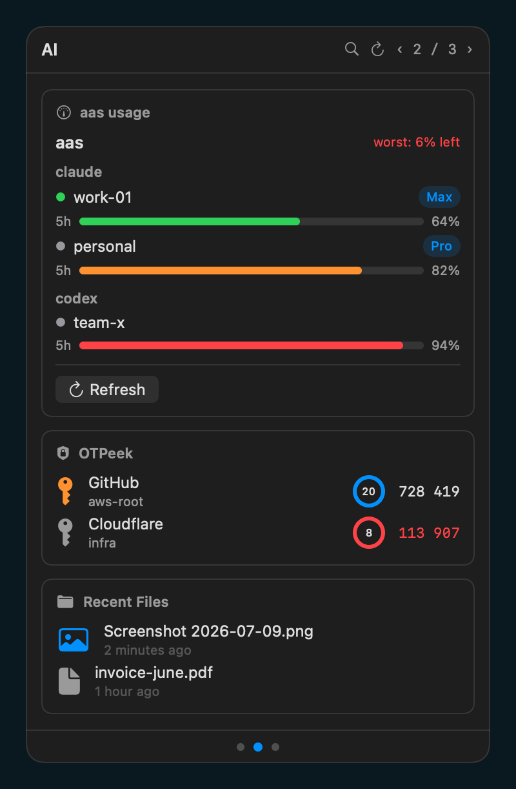
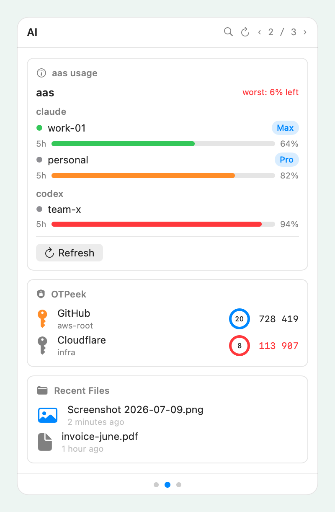

Your menu bar,
finally organized.
메뉴바,
이제 하나면 됩니다.
One menu bar icon. Every glanceable tool you care about — OTP codes, LLM usage, recent files — as native widgets in a single popover. Any CLI you already have becomes a widget in minutes.
메뉴바 아이콘 하나. 자주 확인하는 것들 — OTP 코드, LLM 사용량, 최근 파일 — 을 하나의 팝오버에 네이티브 위젯으로 모읍니다. 이미 쓰던 CLI가 몇 분 만에 위젯이 됩니다.


Scattered tools, one calm popover.
흩어진 도구들을, 하나의 팝오버로.
Your most-checked tools live in a dozen menu bar icons, terminal windows, and browser tabs. BarShelf collects them into one icon.
자주 확인하는 도구들이 수십 개의 메뉴바 아이콘, 터미널 창, 브라우저 탭에 흩어져 있습니다. BarShelf는 그것을 아이콘 하나로 모읍니다.
One icon, many widgets
아이콘 하나, 위젯 여럿
Bucket pages, trackpad swipe, a pinned row, and ⌘F search — no more menu bar clutter.
버킷 페이지, 트랙패드 스와이프, 고정 행, ⌘F 검색 — 메뉴바 난립은 끝.
CLI is the API
CLI가 곧 API
Pipe aas usage --json, otpeek, gh straight in. No new SDK.
aas usage --json, otpeek, gh를 그대로 연결. 새 SDK 학습 없음.
Native, not web
웹뷰가 아닌 네이티브
SwiftUI rendering, dark mode, SF Symbols, vibrancy. No Electron, zero dependencies.
SwiftUI 렌더링, 다크모드, SF Symbols, 비브런시. Electron 없음, 의존성 0.
Permission-gated
권한 게이트
Every widget is approved on first run, then enforced with an audit log.
모든 위젯은 첫 실행 시 승인을 거치고, 감사 로그로 강제됩니다.
Three ways to build. One widget model.
세 가지 제작 방식, 하나의 위젯 모델.
Every widget shares the same scheduler, permission frame, and native renderer — it only differs in where its data comes from.
모든 위젯은 같은 스케줄러·권한 프레임·네이티브 렌더러를 공유합니다. 다른 건 데이터가 어디서 오느냐뿐입니다.
Run a command
명령 실행
A manifest declares a CLI; its JSON output renders as a native view tree — directly, or through a builtin adapter.
manifest가 CLI를 선언하면, 그 JSON 출력이 네이티브 뷰 트리로 렌더링됩니다 — 직접 또는 내장 어댑터로.
Declarative, no code
선언형, 코드 없이
A JSON DSL: sources → transforms → view with interpolation, forEach, folder watching and QuickLook thumbnails.
JSON DSL: sources → transforms → view, 보간·forEach·폴더 감시·QuickLook 썸네일 지원.
Full TypeScript
완전한 TypeScript
A resident Deno process over JSON-RPC with host-mediated exec / storage / secret / timer — isolated from the app.
JSON-RPC로 통신하는 상주 Deno 프로세스. exec / storage / secret / timer를 호스트가 중개 — 앱과 격리.
Build a widget in three steps — no JSON.
세 단계로 위젯 제작 — JSON 없이.
- 1Source소스 — run a command, watch a folder, or static text. A test run auto-detects JSON.명령 실행, 폴더 감시, 또는 고정 텍스트. 시험 실행으로 JSON 자동 감지.
- 2Display표시 — list, table, single value, or text — with a live preview rendered by the real engine.리스트·테이블·단일 값·텍스트 — 실제 엔진이 렌더링하는 라이브 프리뷰와 함께.
- 3Details세부 — name, SF Symbol icon, bucket, refresh interval. It hot-reloads instantly.이름, SF Symbol 아이콘, 버킷, 갱신 주기. 즉시 핫 리로드.

Real renders from the app's own SwiftUI — not mockups.
앱의 실제 SwiftUI 렌더입니다 — 목업이 아닙니다.
Ready on first launch.
설치 즉시 사용 가능.
hello exec
The smallest widget — a shell script that emits a view tree.
가장 작은 위젯 — 뷰 트리를 출력하는 셸 스크립트.
aas Usage exec
LLM account usage meters from aas usage --json.
aas usage --json의 LLM 계정 사용량 미터.
OTPeek exec
TOTP codes with a countdown ring; Keychain-injected vault.
카운트다운 링이 있는 TOTP 코드; Keychain 볼트 주입.
Recent Files workflow
Recent files with QuickLook thumbnails and drag-out.
QuickLook 썸네일과 드래그아웃 지원 최근 파일.
Script Clock script
A live clock + click counter via the TypeScript SDK.
TypeScript SDK로 만든 라이브 시계 + 클릭 카운터.
Three ways in.
세 가지 설치 방법.
Download
다운로드
# Notarized — no Gatekeeper dance BarShelf-*.zip → /Applications # then double-click ✓
Grab the zip from GitHub Releases and drop it in Applications.
GitHub Releases에서 zip을 받아 Applications에 넣으세요.
Homebrew
brew tap Open330/barshelf \ https://github.com/Open330/barshelf brew install --cask barshelf
Tap the repo and install the cask.
repo를 tap하고 cask를 설치하세요.
Widget CLI
위젯 CLI
mbk new my-widget mbk validate ./my-widget mbk install github.com/Open330/aas
Scaffold, validate, pack and install widgets from a repo.
위젯을 스캐폴드·검증·패키징하고 repo에서 설치하세요.
Tidy up your menu bar.
메뉴바를 정리할 시간.
Free, open source, notarized, and dependency-free. macOS 13+ on Apple Silicon.
무료, 오픈소스, 공증 완료, 의존성 0. Apple Silicon macOS 13+.